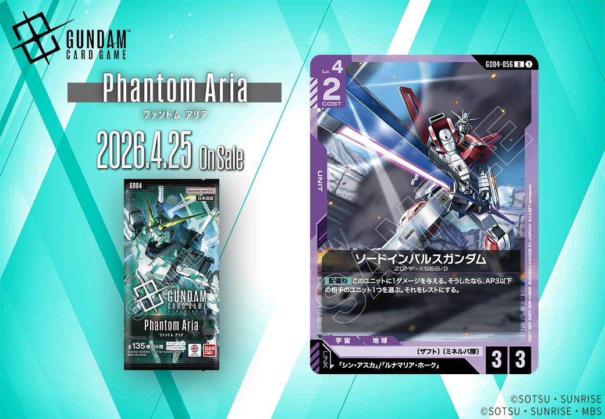
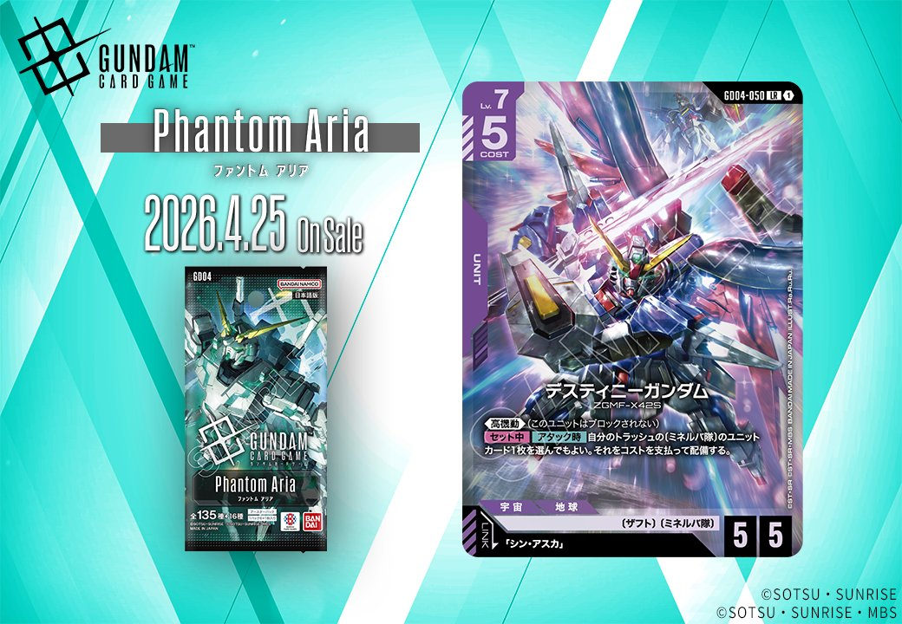
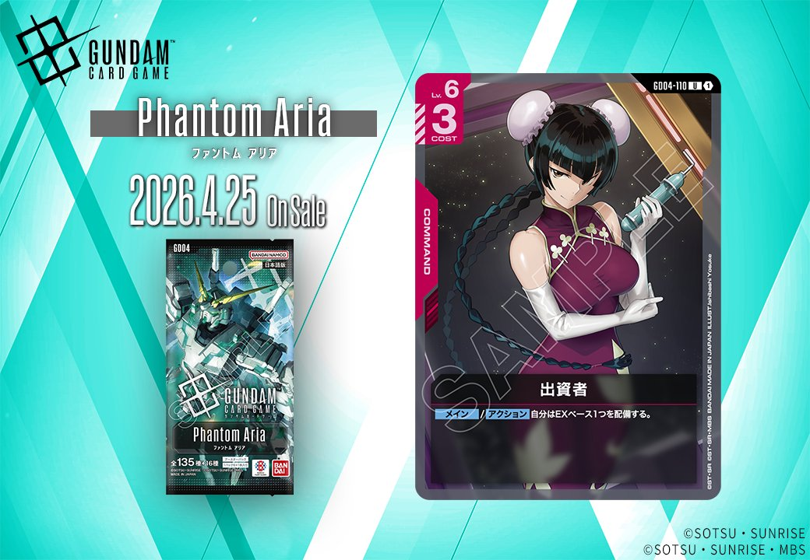
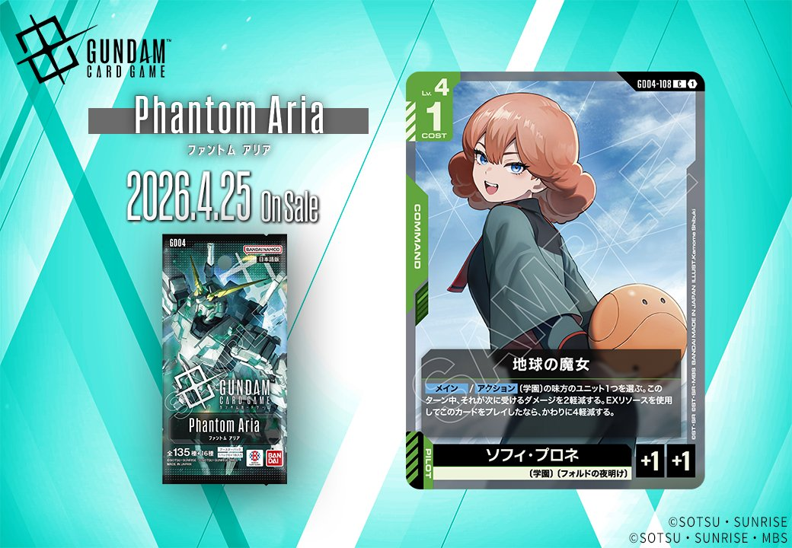
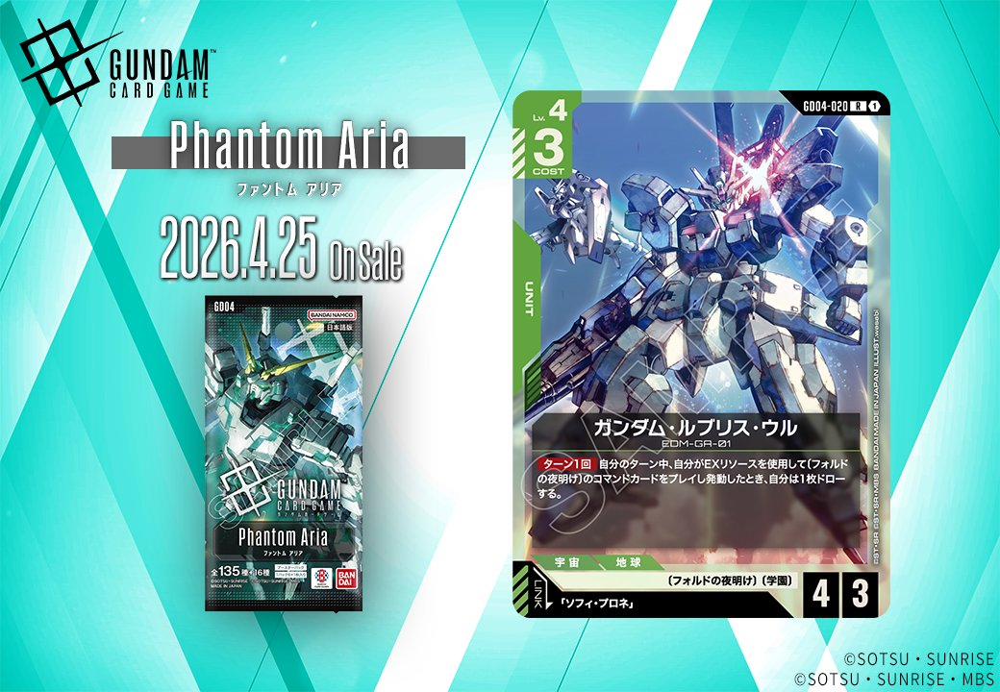
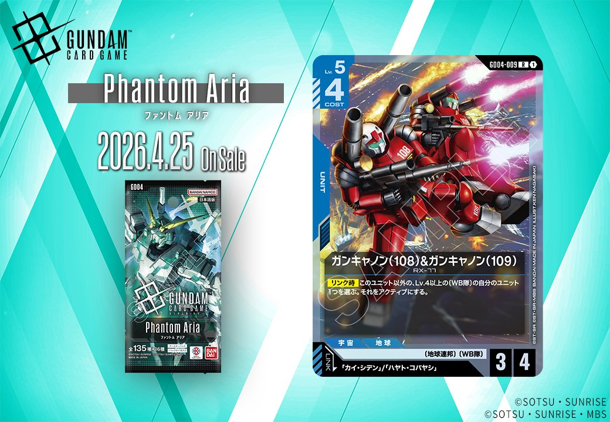

GD04 Phantom Ariaから7枚の新カードが公開されました。紫色のソードインパルスガンダムとデスティニーガンダム、青色のガンキャノン連番UNIT、緑色のガンダム・ルブリス・ウルとソフィ・プロネなど、各色にバランス良く配分されたラインナップとなっています。特に紫色に高性能UNITが集中している点と、赤色の新たなCOMMANDカード「出資者」の効果が環境に与える影響に注目が集まります。

ソードインパルスガンダム (GD04-055)
| 色 | 紫 | タイプ | UNIT |
| Lv | 4 | COST | 2 |
| AP | 3 | HP | 3 |
| 特徴 | ザフト、ミネルバ隊 | ||
効果: 【配備時】このユニットに1ダメージを与える。そうした場合、AP3以下の相手のユニット1つを選ぶ。それをレスト状態にする。
COST2でAP3/HP3の基本ステータスを持つLv.4の紫UNITで、配備時に自身に1ダメージを与える代わりにAP3以下の相手ユニットをレスト状態にできる除去効果を持つ。自傷ダメージのデメリットはあるものの、AP3以下という範囲の広さと即座に相手の行動を封じられる点が魅力的で、紫デッキで高採用率のバルバトス系ユニットとの相性も良好。配備ターンから相手の主力ユニットを機能停止に追い込める制圧力の高いカードとして期待できる。


ジンクス (GD04-015)
| 色 | 白 | タイプ | UNIT |
| Lv | 4 | COST | 6 |
| AP | 5 | HP | 3 |
| 特徴 | 国連 | ||
効果: 手札のこのカードを、自分のトラッシュの〔国連〕/〔超大国群〕のコマンドカードと同じ枚数/2以下のコストにする。
手札のこのカードを、自分のトラッシュの〔国連〕/〔超大国群〕のコマンドカードと同じ枚数/2以下のコストにする効果により、序盤からCOST6のUNITを低コストで展開できる可能性を持つ。AP5/HP3という高い攻撃力を活かすには、トラッシュに〔国連〕/〔超大国群〕のCOMMANDカードを効率的に送り込む構築が必要となる。白系デッキで採用率38.2%の「溢れる慈愛」のような白のCOMMANDカードとの組み合わせが現実的な運用ルートになりそうだ。

デスティニーガンダム (GD04-050)
| 色 | 紫 | タイプ | UNIT |
| Lv | 7 | COST | 5 |
| AP | 5 | HP | 5 |
| 特徴 | ザフト、ミネルバ隊 | ||
効果: 《高機動1》（このユニットはブロックされない） 【セット時】【アタック時】自分のトラッシュ（ミネルバ隊）のユニットカード1枚を選んでもよい。それをコストを支払って配置する。
デスティニーガンダムは高コストながらAP5/HP5の優秀なステータスに加え、《高機動1》によりブロックされずに確実にダメージを与えられる強力なフィニッシャーです。セット時とアタック時にトラッシュのミネルバ隊ユニットをコストを支払って配置する効果により、盤面の継続的な展開が可能で、ミネルバ隊シナジーを活かしたデッキでの採用が期待されます。現在の紫環境は鉄血系カードが主流ですが、このカードを軸とした新たなSEED系構築の可能性を感じさせる一枚です。

出資者 (GD04-110)
| 色 | 赤 | タイプ | COMMAND |
| Lv | 6 | COST | 3 |
| AP | - | HP | - |
| 特徴 | |||
効果: 【メイン】/【アクション】自分はEXベース1つを配備する。
COST3でEXベース1つを配備できる赤のCOMMANDカード。メイン・アクション両方で使用可能な柔軟性があり、EXベースの安定供給によりEX効果を持つカードとの相性が良い。Lv.6と重めだが、リソース加速効果としては標準的なコスト設定で、赤系デッキのリソース基盤強化に貢献できそうなカード。

ソフィ・プロネ (GD04-108)
| 色 | 緑 | タイプ | PILOT |
| Lv | 4 | COST | 1 |
| AP | - | HP | - |
| 特徴 | 学園、フォルドの夜明け | ||
効果: 【リンク時】「アクション」〔学園〕の味方のユニット1つを選ぶ。このターン中、それが次に受けるダメージを2軽減する。EXリソースを使用してこのカードをプレイしたなら、かわりに4軽減する。
ソフィ・プロネは学園特徴を持つPILOTで、リンク時に学園ユニットへの防御バフを提供する。通常時は2軽減、EXリソース使用時は4軽減と大幅に生存性を向上させる効果は魅力的だが、COST1のPILOTとしては防御的な効果に留まる。 学園デッキにおいてはユニットの継戦能力を高める重要な役割を果たせるものの、現状では学園テーマの競技レベルでの実績が限定的であり、環境への影響は未知数と言える。


ガンダム・ルブリス・ウル (GD04-020)
| 色 | 緑 | タイプ | UNIT |
| Lv | 4 | COST | 3 |
| AP | 4 | HP | 8 |
| 特徴 | ソフィ・プロネ | ||
効果: 【ターン1回】敵がゲージ中、自分がEXリソースを使用して「フォルドの夜明け」のコマンドカードをプレイし、敵動したとき、敵の持ち枚1を捨てる。
ガンダム・ルブリス・ウルは「フォルドの夜明け」COMMANDカードと連携して敵の手札を削るコントロール志向のUNITです。COST3でAP4/HP8という標準的なステータスを持ちながら、EXリソースを使った特定のコマンドとの組み合わせで相手のリソースを削る効果を持ちます。効果発動にはEXリソースと特定のコマンドカードが必要なため構築に制約があるものの、手札破壊による妨害性能は魅力的で、緑系のコントロールデッキで採用される可能性があります。

ガンキャノン(108)&ガンキャノン(109) (GD04-009)
| 色 | 青 | タイプ | UNIT |
| Lv | 5 | COST | 4 |
| AP | 3 | HP | 4 |
| 特徴 | 地球連邦、WB隊 | ||
効果: このユニット以外のLv.4以上の〔WB隊〕の自分のユニット1つを選択されるたびにディナイする。
Lv.5のUNITとしてはコスト4・AP3/HP4という標準的なステータスを持つ青色のWB隊UNIT。「このユニット以外のLv.4以上の〔WB隊〕の自分のユニット1つを選択されるたびにディナイする」効果は、相手の除去対象を制限する保護効果として機能する。WB隊デッキにおいて高レベル帯のUNITを守る役割を担えるが、自分のWB隊UNITが複数展開されている状況でないと効果を発揮しにくい点に注意が必要だ。


関連カード
-
 三日月・オーガス(ST05-010)紫系デッキ内採用率39.5% (372デッキ)
三日月・オーガス(ST05-010)紫系デッキ内採用率39.5% (372デッキ) -
 ガンダム・バルバトスアダプト(GD03-056)紫系デッキ内採用率39.4% (371デッキ)
ガンダム・バルバトスアダプト(GD03-056)紫系デッキ内採用率39.4% (371デッキ) -
 ガンダム・バルバトス（第1形態）(GD02-054)紫系デッキ内採用率39.1% (368デッキ)
ガンダム・バルバトス（第1形態）(GD02-054)紫系デッキ内採用率39.1% (368デッキ) -
 百錬(ST05-006)紫系デッキ内採用率35.4% (333デッキ)
百錬(ST05-006)紫系デッキ内採用率35.4% (333デッキ) -
 グレイズ改(ST05-004)紫系デッキ内採用率35.2% (332デッキ)
グレイズ改(ST05-004)紫系デッキ内採用率35.2% (332デッキ) -
 シン・アスカ(ST09-008)紫系デッキ内採用率0% (0デッキ)
シン・アスカ(ST09-008)紫系デッキ内採用率0% (0デッキ) -
グラハム・エーカー(GD03-098)白系デッキ内採用率1% (9デッキ)
-
 溢れる慈愛(GD01-118)白系デッキ内採用率38.2% (360デッキ)
溢れる慈愛(GD01-118)白系デッキ内採用率38.2% (360デッキ) -
 ガンダム・ルブリス(GD01-086)白系デッキ内採用率37.8% (356デッキ)
ガンダム・ルブリス(GD01-086)白系デッキ内採用率37.8% (356デッキ) -
 エールストライクガンダム(ST04-001)白系デッキ内採用率37.4% (352デッキ)
エールストライクガンダム(ST04-001)白系デッキ内採用率37.4% (352デッキ)
出典:
- https://x.com/GUNDAM_GCG_JP/status/2037801872996868441
- https://x.com/GUNDAM_GCG_JP/status/2037496102141014114
- https://x.com/GUNDAM_GCG_JP/status/2037494843664953648
- https://x.com/GUNDAM_GCG_JP/status/2037493585638011160
- https://x.com/GUNDAM_GCG_JP/status/2037492328575959276
- https://x.com/GUNDAM_GCG_JP/status/2037491068824858957
- https://x.com/GUNDAM_GCG_JP/status/2037489810546315416